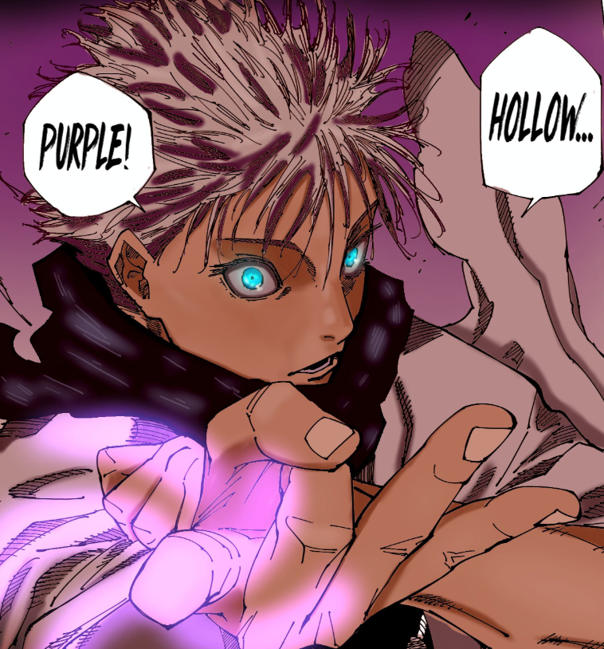

Career Accomplishments
Abilities
- Satoru Gojo's career is marked with incredible accomplishments which is to be expected for someone of his status. From birth he already showed remarkable potential, inheriting both the Six Eyes and the Limitless cursed technique with the two abilities not being seen together for over 400 years. However, his impressive and extremely powerful techniques are not the only things he have, being one of the only sorcerers to know Reverse Cursed Technique, a healing technique that is extremely difficult concept to grasp, requiring a deep understanding of cursed energy in order to use the technique, with a man as talented as Gojo needing to nearly die in order to fully grasp and use it efficiently, with his knowledge and use of RCT easily cementing himself as the strongest sorcerer in modern history without little contest from any other modern era sorcerer

Physical Accomplishments
- Gojo doesn’t just have his abilities to boast about, with him also having a huge backlog of insane accomplishments that most special grades couldn’t dream of. For example, he utterly humiliated Jogo, a disaster curse that even most special grade sorcerers would be challenged by was defeated without so much as a scratch on Gojo’s body. He also defeated Toji as a mere teenager shortly after learning RCT, defeating him with just one hollow purple, a technique that even other Six Eye and Limitless sorcerers couldn’t use, with Toji being far above Geto, another special grade sorcerer who Toji completely destroyed with medium difficultly, further showing how far Gojo is above everyone else.